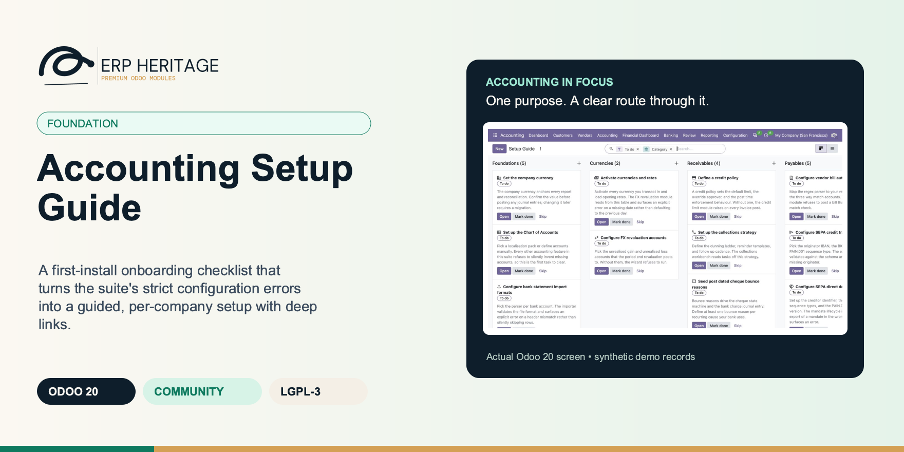
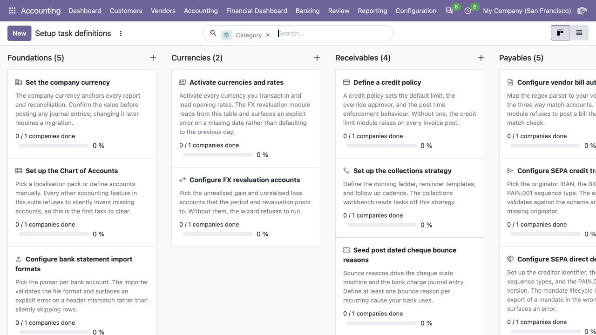
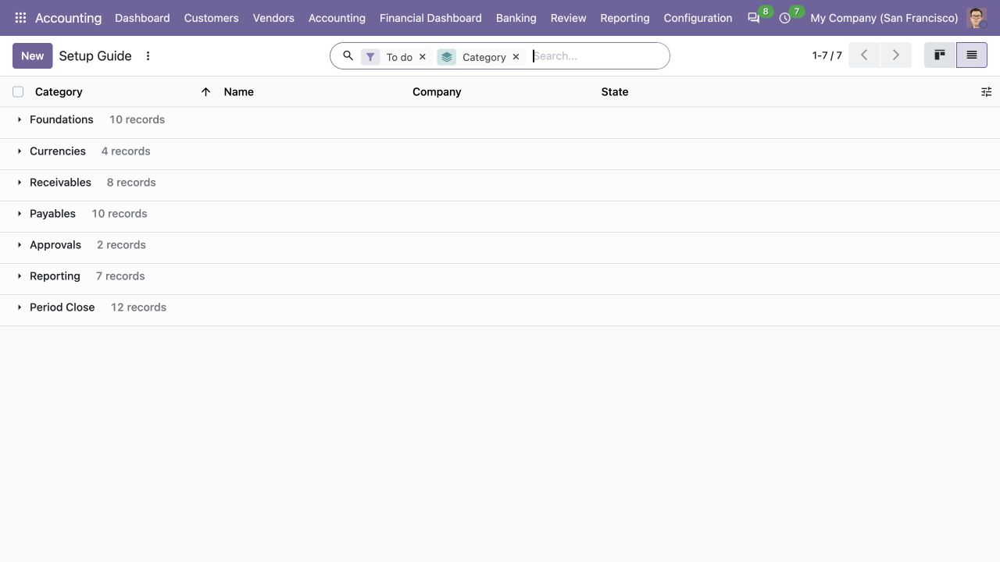

ERP HERITAGE / ODOO 20 COMMUNITY
Accounting Setup Guide
A first-install onboarding checklist that turns the suite's strict configuration errors into a guided, per-company setup with deep links.
LGPL-3 · Odoo 20 · v20.0.1.0.6 · Module guide, setup, workflows and rollout checks
The purpose
Make the next finance decision clearer.
The accounting suite refuses to silently default. Missing rates, missing accounts, missing approval groups all surface explicit errors. That is excellent for correctness and harsh on first install. This module reframes the same configuration work as a guided checklist: one row per setup task, per company, with a deep link into the correct configuration screen and a clear state of to do, done, or skipped.
Inside Odoo 20
See the accounting workflow.
Captured from Odoo 20 Community using synthetic demonstration records. Configuration screens show the available workflow; external service connectivity still requires the relevant provider setup and validation.

Company setup guide groups finance tasks by area, with links and completion or skip controls.
Captured 2026-09-22 from isolated Odoo 20 Community database with synthetic demonstration records. No external submission or live banking activity is represented.

Setup task definitions organize foundation, currency, receivable and payable configuration work.
Captured 2026-09-22 from isolated Odoo 20 Community database with synthetic demonstration records. No external submission or live banking activity is represented.

Company setup checklist lists the remaining configuration tasks for review.
Captured 2026-09-22 from isolated Odoo 20 Community database with synthetic demonstration records. No external submission or live banking activity is represented.
Inside this module
Built around the work your team does.
Errors become a checklist
The suite's strict configuration errors are reframed as 26 tasks across 7 categories. Each row tells the operator exactly what is left and opens the screen to fix it, instead of failing at first use.
Fail-loud, never silent
A task whose deep link external id is missing, unresolved, or not an Odoo action raises a clear error naming the exact id, never a random fallback. The completion ratio excludes skipped companies from its denominator and reports completed work among active outcomes.
Per-company by design
One progress line per task per company, with a unique constraint and a global isolation rule. A multi-company tenant sees the checklist once per company, with independent progress and no cross-company leakage.
SKIPPED EXCLUDED
Skipped companies remain visible in their own counter and are excluded from the completion-ratio denominator. The percentage therefore reports done versus still-to-do work without treating an explicit skip as either completion or pending work.
SEARCHABLE RELEVANCE
The Is relevant flag is fully searchable, not just displayable. A custom search method lets filters and group-by act on installed-module state, and raises a clear error on an unsupported operator instead of silently returning every row.
THREE FAILURE MODES
Open guards a missing action external id, an id that does not resolve, and an id that resolves to a non-action record. Valid actions pass through Odoo's canonical web-safe action serializer.
IDEMPOTENT SEEDING
Install-time and new-company seeding are both idempotent and bulk-create only missing lines. Adding a company mid-life, or reinstalling after adding a sibling module, never duplicates lines or wipes existing progress.
SCOPED KANBANS
The form's sibling kanban (same task, other companies) and peer kanban (same company, same category) both exclude the current record and respect scope, so an operator sees tenant progress and what is next without leaving the line.
From input to outcome
Follow the complete workflow.
Prepare the business inputs
Choose the active company and review the relevant task list before treating completion percentages as a rollout decision. Gather companies, installed accounting modules, checklist categories, task states and completion notes. Use a representative case with a known expected result so the team can separate configuration decisions from unexpected behaviour. Keep the supporting commercial or accounting evidence available during review.
Run the supported operation
Open the target configuration screen from each task, make the required business choices, and record completion or an explained skip. Follow the record’s available actions in the order intended by the workflow. Review the selected company, relevant dates and any validation messages before continuing. If the source data changes, reassess the result against the updated evidence.
Worked operating scenario
You install the accounting suite and open Setup Guide. It lists 26 tasks, grouped by category, filtered to what is still to do and to the modules you actually installed. You click Open on Configure base currency rates and land directly on the right screen. You finish it, mark it done, and your name and the timestamp are recorded. A second company joins the tenant next week and gets its own clean checklist, no duplicates, your existing progress untouched.
Review the result in context
Review unfinished tasks with the process owner and confirm that a skipped item represents an intentional scope decision. Compare the outcome with the expected treatment for this case and record the reason for any difference that requires follow-up. Give exceptions an owner so they do not disappear inside a period-end spreadsheet.
Make the process repeatable
Hand over the checklist with its notes, completion dates and responsible people so the next consultant can continue from recorded work. Include the accepted operating example, configuration choices and unresolved dependencies in the handover. Review them when business policy, source data or the surrounding Odoo applications change.
Business situations
Where this module fits.
Focused operational adoption
Accounting Setup Guide is relevant to implementation consultants and finance administrators who need to answer this question: Which accounting configuration still needs an owner before the first live close? Start with the process that creates the decision, identify its owner and agree what evidence the reviewer needs. A narrow pilot helps the team evaluate the supported workflow using its own accounting data before broadening access.
A reviewed period-end handover
Use the module’s foundation role as one part of a controlled close. Bring the relevant companies, installed accounting modules, checklist categories, task states and completion notes to the review, then explain the result alongside the business event it represents. Establish which outputs become part of the reporting pack and which outstanding matters need a separate accounting decision.
A clear implementation acceptance case
Turn the business question into an acceptance case: Which accounting configuration still needs an owner before the first live close? Use one ordinary example and one relevant exception from the supported scope below. Ask the intended operator to prepare it and the reviewer to explain the result. Retain that accepted example with the deployment notes so future changes can be assessed against an understood process.
Before the first result
Prepare a clean, reviewable starting point.
Agree scope before configuration
Confirm that the organisation needs the supported foundation process described here. Identify the responsible implementation consultants and finance administrators and write down the decision they expect the module to support. Use the limitations section to separate shipped behaviour from an integration, professional judgement or operational service that needs another owner.
Bring the required data
Prepare companies, installed accounting modules, checklist categories, task states and completion notes. Check the relevant records in the intended company and use dates that match the business event. Resolve missing accounting configuration before evaluating calculated output; plausible-looking totals do not establish that the chosen inputs or policies are correct.
Check the installed foundations
This module declares Accounting Suite Base as part of its installation foundation. Its direct standard-Odoo dependencies are mail. Review the actual dependency set in the target database before a rollout, especially where another addon also extends the same accounting models, menus or posting actions.
Set up an owned review routine
Define who operates Accounting Setup Guide, who reviews unusual results and who maintains configuration. Run the representative workflow below in a test database using the intended users. Confirm that users can reach the work they own and that the reviewer understands the available evidence before moving the process into live operation.
Workflow reference
Understand the records and controls.
Capability detail 1
The Setup Guide menu sits under Accounting > Accounting > Setup Guide, where every EH Accounting User can reach it, and lists 26 seeded tasks across 7 categories (foundations, currencies, receivables, payables, approvals, reporting, period close). It opens grouped by category, filtered to To do, and to relevant tasks only. Each task carries an action external id that is resolved through Odoo's safe action serializer at click time; Open jumps straight into the exact configuration screen. The checklist itself is scoped to the active company by a global isolation rule, so records outside the user's allowed companies are never returned.
Capability detail 2
Tasks tied to optional modules render only when those modules are installed, via a fully searchable Is relevant flag, so filters and group-by act on installed-module state and the list never shows clutter for features the customer did not buy. Each line records who completed the task and when, alongside free notes for the reviewer, and skip and reset are reversible. Seeding is idempotent on both install and new-company creation, creating only missing lines and preserving existing progress.
26 seeded tasks, 7 categories
Foundations, currencies, receivables, payables, approvals, reporting, and period close. The task definitions are seeded by XML and shared across companies; per-company progress lives on a separate line model so re-wording a task on upgrade never blows away user state.
Deep links resolved at click time
Each task carries an action external id. Open validates the target and returns Odoo's web-safe action dictionary, so only a real Odoo action reaches the client. The opened screen is whatever Odoo defines it as; this module does not inject a company filter into it.
Operator-visible guide
EH Accounting Users reach Setup Guide under Accounting > Accounting > Setup Guide. Manager-only task definitions remain under Configuration.
Module-aware visibility
Each task lists the technical module names it needs. The task renders for a company only when every listed module is installed. Empty means the task always renders. The Setup Guide action filters on this flag so the list stays clean.
Audit trail and reversible workflow
Every line records Completed at and Completed by plus free notes for the reviewer. Mark done, mark skipped, and reset are explicit actions; reset clears the current audit stamp while chatter retains transition history.
Plain Odoo, no surprises
Standard Odoo views with no JavaScript, no external links, and no third-party assets. Multi-company isolation is enforced at the record-rule layer with a global domain, not bolted on in the UI.
Required modules
Whitespace separated list of technical module names. The task only renders for a company when every listed module is installed in the database. Empty means the task always renders.
Action xmlid
External id of the ir.actions.* record to open when the user clicks Open on the task. Resolved at click time, so the definition does not break if the target action is renamed; an unresolved id surfaces a clear error naming the missing xmlid.
Is relevant
True when every module listed on the task definition is installed. The Setup Guide action filters on this flag so the user does not see clutter for features they did not install.
Sibling lines
Other companies' progress on the same task. Renders as a kanban snapshot on the form so the operator can see how the rest of the tenant is progressing without leaving the record.
Peer lines
Other tasks for this same company in the same category. Renders as a kanban snapshot on the form so the operator knows what is next in the same area.
Hand over an incomplete implementation
Illustrative implementation exercise. An implementation consultant finishes foundational configuration for one company while another company still has banking and closing work outstanding. Review each company’s task list separately. A skipped task should represent an explained scope choice, not a concealed configuration failure, and the completion ratio excludes skipped work rather than treating it as completed configuration. Complete one representative task, record a note, and review the completion actor and time. Use the controlled reset path when a genuine configuration decision must be revisited. Ask the incoming administrator to open the configuration screen from the task and explain the remaining work without relying on the outgoing consultant’s private spreadsheet.
Questions before rollout
Answers your finance team needs.
Who is this module designed for?
It is designed for implementation consultants and finance administrators. Its central business question is: Which accounting configuration still needs an owner before the first live close? The listing describes the shipped operating scope and the decisions that remain with the organisation. Evaluate it against your own records and review process, rather than treating the module name as a promise to cover every scenario in that accounting area.
What should be ready before the first run?
Have companies, installed accounting modules, checklist categories, task states and completion notes ready, together with the person who owns the related accounting policy. Choose the active company and review the relevant task list before treating completion percentages as a rollout decision. A known example makes it possible to check the result and resolve configuration questions before the process is repeated across more records or companies.
What should a reviewer inspect?
Review unfinished tasks with the process owner and confirm that a skipped item represents an intentional scope decision. Keep the relevant source evidence with the output and be explicit about company, date and policy choices. The most useful review asks whether the result follows from the business inputs, not only whether the operation completed without a validation message.
How does this fit into the accounting suite?
It belongs to the foundation family. Its declared custom dependency foundation is Accounting Suite Base. Installing the complete suite also brings other operating and specialist modules; using this focused module should be evaluated against its own dependency list and scope. Optional services still need their own configuration and agreement where applicable.
What is the most important scope boundary?
This module tracks and links to configuration; it does not perform the configuration for you. Open takes you to the right screen, where you make the change. Hand over the checklist with its notes, completion dates and responsible people so the next consultant can continue from recorded work.
Does installing it validate our accounting policy?
No. Accounting Setup Guide provides the specific records, calculations or workflow described in this listing. The organisation remains responsible for its source information, accounting choices, supporting evidence and review. Where the process uses an estimate, a contract assessment or an external service, appoint the appropriate owner before relying on the output.
Scope and requirements
Know exactly what you are installing.
This module tracks and links to configuration; it does not perform the configuration for you. Open takes you to the right screen, where you make the change.
Deep links open the target screen exactly as Odoo defines it. This module does not pre-filter the opened screen to the active company; only the checklist itself is company-scoped, by the global isolation rule.
The menu opens grouped by category and filtered to To do and to relevant tasks. There is no company search filter in the action context; company visibility comes from the record rule, so users only ever see their allowed companies.
Module-aware visibility keys off installed technical module names you set on each task. A task with no required modules always renders.
The 26 seeded tasks cover the ERP Heritage accounting suite's setup steps. This is an onboarding tracker for that suite, not a generic project or task manager.
Standards references describe the accounting subject addressed by the module. They do not establish certification, statutory filing acceptance or suitability for every jurisdiction. Your finance team owns its assumptions, accounting policies and review.
Installation scope
Included dependencies, explained.
Odoo installs the following direct dependencies automatically. Additional dependencies can be brought in by those modules. Related modules in the wider catalogue are optional unless they appear in this dependency chain.
Accounting Suite Base
Shared reporting engine for the ERP Heritage Odoo 20 Community accounting suite, providing a reproducible report-execution audit log and a move-version result cache. Append-only audit log of every report render with user, timestamp, the full options snapshot, runtime, and a SHA-256 result hash for XLSX and PDF output, plus a multi-company analytic-aware parameterised SQL builder with no raw user input in SQL, a three-tier User/Manager/read-only Auditor privilege model, and a currency-aware XLSX writer. Odoo 20 Community accounting reporting engine, reproducible financial report audit trail, move-version report cache invalidation, multi-company parameterised SQL builder, append-only audit log, read-only auditor role, SHA-256 report hash compliance, currency-aware XLSX export, analytic-aware journal item aggregation.
Included dependency: eh_account_base. The shared reporting engine under the ERP Heritage accounting modules: an append-only render audit log, precise per-company cache invalidation, and a whitelist-only parameterised SQL builder.
Odoo Community dependency required by this module. Its own dependencies and configuration remain part of the installation scope.
Acceptance guide
Run a pilot your team can trust.
The following are recommended rollout checks, not claims of additional built-in features. Apply the checks relevant to this module and retain evidence of your own results.
Start with one complete business cycle
Select a recent, closed period that your finance team understands well. Keep its approved source documents, ledger totals and existing working papers available. Reproduce that period in a staging database before working on current transactions. A familiar period makes differences visible: you can distinguish an opening balance problem from a configuration choice, a timing difference or a genuine defect. Agree which person owns each discrepancy and what evidence will close it. Successful installation is the starting point; a repeatable business outcome is the acceptance criterion.
Define the result before choosing settings
Write down the output your team needs from this module: a reviewed transaction, an exported file, a reconciled balance, an approved schedule or an operational queue. Identify who prepares it, who reviews it and who relies on it next. Make the scope concrete with one company, one reporting period and a small representative document set. Include an ordinary case and an exception. This keeps the evaluation focused on the business decision instead of the number of available screens, and gives reviewers a consistent way to compare the new workflow with their current process.
Check the edition and dependency boundary
Use the Odoo 20 edition of the module and its dependencies together. The manifest defines what Odoo installs automatically; a feature mentioned elsewhere in the wider product family is not automatically included. Review the dependency guide on this page before enabling the complete suite, especially where your deployment also uses Sales, Purchase, Inventory or website components. Confirm that your hosting arrangement accepts custom server modules and their Python requirements. Keep a copy of the installed module versions with your acceptance record so a later update can be checked against the same baseline.
Prepare master data with finance owners
Check the companies, currencies, fiscal periods, journals, accounts and partner records used by your sample. Confirm that account purposes agree with your chart of accounts and that archived records are not being selected inadvertently. Review company-specific settings while the intended company is active. Where a workflow needs bank details, analytic dimensions, product information or payment terms, validate those inputs with their owner. Clean master data reduces repeated exceptions and makes it easier to investigate the exceptions that remain. Keep the preparation list short enough for someone else to repeat it.
Keep opening balances traceable
Decide which source establishes the opening position before introducing new transactions. Save the source date, company, currency and supporting reconciliation. If a module maintains a schedule or a working-paper balance alongside the ledger, document how that opening amount should tie to the general ledger. Do not use balancing entries to hide a difference during the pilot. Classify the difference, correct its source and rerun the comparison. The resulting trail is useful both for your internal reviewer and for support if an unexpected calculation needs investigation.
Assign preparation and review deliberately
Choose named users for preparation, review and administration. Confirm their practical access by signing in as those users in staging, rather than relying on an administrator's view of the menus. A visible menu does not replace model access or record restrictions, and a hidden menu does not by itself prove that data is protected. For your own acceptance check, verify the specific business operations each role needs. If your organization requires separation of duties, include that policy in the rollout criteria and check the actual workflow against it before granting production access.
Exercise company boundaries
Run the sample with the intended company selected, then repeat the relevant navigation and search checks as a user assigned to a different company. Record which company owns each source document and each generated result. For users who work across entities, confirm how their allowed-company selection affects totals and available records. Investigate any cross-company difference before it becomes a month-end problem. Group-level work and company-level work have different scopes; use the appropriate module and document the scope on the review evidence instead of assuming one screen represents both.
Use representative currencies and dates
Include a company-currency case and, where relevant to the module, a foreign-currency case. Check the date used to select exchange rates and keep the rate source available to the reviewer. Add a transaction near a period boundary so the team can see whether document date, accounting date or another business date drives the result. Test decimal precision with a small amount as well as a large one. Record the expected rounding treatment. These checks turn vague differences in totals into questions that can be resolved against your accounting policy.
Trace one result back to its source
Choose one result and follow the available links or record references back to the original business document. Compare its company, partner, amount, currency and dates with the expected source. Where the workflow creates a journal entry, inspect the accounts and balancing lines before relying on an aggregate report. Where it exports a file, compare the file's records with the selected batch. Save a small, intelligible evidence set instead of an indiscriminate screenshot archive. A reviewer should be able to explain what happened without needing the original preparer beside them.
Treat posting as a controlled milestone
If this module creates or updates accounting entries, separate preparation from the decision to post in your operating procedure. Inspect the proposed outcome, resolve missing configuration and confirm the intended period before using a posting action. If the module does not post entries, identify the equivalent commitment point, such as sending a file or approving a review record. Record who is allowed to make that decision. The page describes the module's supported workflow; your team still needs an operating policy that fits its accounting responsibilities and approval structure.
From pilot to production
Make the workflow repeatable.
Test correction, not only success
Use a deliberately incomplete sample in staging: a missing required setting, an unsuitable date or a source document that is not ready for the next step. Observe the actual message and the record state that remains. Correct the input and repeat the operation. Check that the recovered result agrees with the ordinary successful case. For transactions already committed, use the supported correction or reversal workflow rather than editing database records. Your acceptance record should explain how staff recover from mistakes, because that is part of day-to-day usability, not an unusual administrative task.
Check repeated actions with a small sample
Repeat an import, calculation, preparation step or button action only where the documented workflow permits it. Confirm whether the expected behavior is a recalculation, a refusal, a new version or reuse of an existing record. Do not infer universal duplicate prevention from one successful test. Record the behavior of the actual operation your team will use and include it in staff guidance. A small, identifiable sample makes duplicate records easy to spot and avoids creating a misleading acceptance result from a large batch with poorly understood contents.
Review period locks before the first close
Where accounting dates are involved, inspect your company's lock settings and the role that can change them. Include one sample dated inside a closed period and one in the open period, then observe the supported behavior with normal finance access. Agree how the team will handle late documents and approved corrections. The goal is a clear route for legitimate work that preserves the reason the period was closed. Record the policy alongside the module's workflow so operators know when to stop and involve the person responsible for the close.
Validate exports with their recipient
If the module produces reports or exchange files, have the intended recipient inspect a sample. For a finance report, check the filters, company, dates, currency, labels and totals. For a bank or service file, use that recipient's own validation or test process before a production submission. Generating a structurally valid file does not establish acceptance by every provider. Keep the exact sample and any recipient feedback with the rollout record. Where no export is provided, agree which supported screen or linked record serves as the handover evidence.
Separate optional services from core work
Identify any step that depends on a separately configured provider, connector, credential or commercial service. Confirm the exact adapter and its requirements before scheduling a live demonstration. Some family modules provide deterministic rules or file preparation without a live external connection; their usefulness should be evaluated on that basis. Test a provider failure in staging only when the adapter offers a safe test route. Make it clear who manages credentials and provider subscriptions, and who should be contacted when an external service is unavailable.
Measure a realistic working session
Time the operations your staff will actually repeat, using a dataset that resembles your expected company, date range and document volume. Record the environment and sample size beside the timings. Include navigation, filtering, preparation and review rather than quoting a single best-case page load. This page makes no universal performance promise: network latency, database size, customizations and infrastructure affect results. Use measurements to choose a practical rollout batch size and to identify any operation that needs investigation before more users join the workflow.
Train through examples with expected outcomes
Give staff a short exercise that begins with a business situation and ends with a reviewed result. Include the expected amount or state, the navigation route, the point at which a reviewer becomes involved and the supported correction route. Let operators explain why their result is correct. Add only the settings and exceptions relevant to their role. A concise internal playbook built from your own pilot is easier to maintain than a large collection of unannotated screenshots, and it helps new users understand the relationship between this module and the rest of Accounting.
Make support requests reproducible
Capture the module version, Odoo version, affected company, operation, exact message and a minimal sequence of steps. Use redacted sample documents when sharing evidence outside your organization. State the expected result and the actual result separately. Include the date filters and role used, because the same record can look different with another scope or set of permissions. Never include passwords, API tokens or private keys in a support message. Good reproduction details allow the problem to be investigated without guessing at your business setup or asking staff to repeat a full close.
Rehearse an upgrade on a copy
Before deploying an update, back up the database and filestore together, and restore that backup into an isolated environment. Apply the module update there, then repeat the key pilot scenarios using the saved acceptance record. Check that existing documents remain readable and that the expected actions and menus still lead to the right workflow. Include one newly created record as well as an older one. Keep a rollback plan appropriate to your deployment and confirm that the backup can be restored before scheduling the production change.
Define a small release decision
Agree the release criteria before the pilot ends: expected financial results, access boundaries, supported corrections, output acceptance and owner sign-off. List unresolved items with their business impact instead of treating every observation as a blocker or dismissing it as cosmetic. Start production with a manageable scope and a named reviewer. Keep the first cycle's evidence so that later enhancements can be assessed against a concrete baseline. App-store descriptions help you select and understand the module; acceptance in your own configuration establishes whether the workflow is ready for your team.
Connected capabilities
Choose the next capability with context.
These related modules explain how this workflow connects to the wider accounting process. Only the dependencies declared above are installed automatically. Choose optional additions for a specific business need.
Accounting Suite Base
The shared engine that powers the ERP Heritage accounting modules for Odoo 20 Community. It auto-installs as a dependency of any ERP Heritage accounting module, so you do not need to install it by hand.
Odoo 20 Community Accounting Pro
ERP Heritage Community Accounting Pro installs a fixed collection of 50 direct accounting dependencies. Together with the suite itself and the transitive EH EDI Core foundation, its custom-module closure contains 52 modules. The collection brings reporting, reconciliation, payments, receivables, approvals, specialist accounting, group work and close controls into one Community installation. Its value comes from connecting those processes and their evidence; adoption still requires deliberate company configuration, accounting ownership and review. Australian BAS is available separately and installs the suite as its accounting foundation.
Plan the surrounding workflow
Companion playbooks, with scope made explicit.
The following playbooks explain adjacent work in named companion modules. They are included here to help you plan the handoff around this module. Each companion is labelled as an installed dependency or an optional addition. These capabilities belong to that named companion, not to the standalone module you are reading about.
Included through this module’s dependency chain
Accounting Suite Base
The shared reporting engine under the ERP Heritage accounting modules: an append-only render audit log, precise per-company cache invalidation, and a whitelist-only parameterised SQL builder.
Every render is on the record
Each report run writes an append-only execution row: the user, the timestamp, the full options snapshot, the runtime, and a SHA-256 result hash for XLSX and PDF. Re-run the same options against an unchanged ledger and the figures reproduce exactly. Even a cache hit writes its own row, and a failed render is recorded as an error, not lost.
Cache that knows when to expire
A per-company move-version counter bumps atomically on every journal entry state change. A cache hit therefore means nothing has posted, drafted, or cancelled since the payload was built. The counter is a single SQL UPDATE that adds one, so it is correct under concurrency, and it invalidates only the companies that actually changed.
SQL with no room for injection
The reporting hot path runs through a parameterised, analytic-aware SQL builder. Every value binds as a parameter, every identifier comes from a fixed whitelist, and every query is company-scoped, so there is no raw interpolation and no cross-company leakage. It is plain Python you can unit-test without spinning up the Odoo registry.
IDEMPOTENCY
A write that includes state in the values but does not actually change it (a routine recompute) does not spuriously bump the move-version counter or invalidate the cache. The override snapshots the prior state per record and bumps only the ids where the state genuinely transitioned.
DIRECT POST
A move created already in state posted, bypassing posting action entirely, still invalidates the cache. The create override filters posted moves and bumps their companies' counters, so a back-dated or scripted insert cannot leave a stale report standing.
COMPANY SCOPE
A render for companies [1,2] is never served a payload computed for [1] alone. The cache keys on a sorted-comma company set for exact equality, not an IN match that would treat overlapping sets as a hit, so a wider scope can never collide with a narrower cached one.
FULL TRAIL
A cache hit still writes its own audit row pointing back at the source execution, so the compliance trail records every render, not just the first. You can prove how many times a figure was produced and from which cached source.
CONCURRENCY
The per-company counter uses UPDATE col = col + 1 rather than a read-then-write, so two posts landing at the same instant both count and neither is lost, and only the affected company rows are invalidated.
Review this companion’s own setup and scope before connecting the workflows. Keep the company, reporting date and business document references consistent at the handoff.
Optional companion; requires separate installation
Odoo 20 Community Accounting Pro
One connected finance workspace for Odoo 20 Community. Bring daily accounting, banking, budgets, reports and period close together, with specialist workflows for growing finance teams. Add Australian BAS only when your business needs it.
Daily accounting with a shared work structure
Connect the routines that create and settle balances: incoming bills, recurring invoices, bank imports, reconciliation, payment batches and collection cases. Each process retains its own evidence and supported controls. Use the bundle to build coherent team handoffs instead of evaluating the daily ledger only at reporting time.
Reports that lead back to their scope
Combine standard financial reports, custom definitions, saved reporting choices and a company-focused dashboard. Reviewers can move from an amount to the applicable detail and retain the reporting context. Scheduled delivery and projections extend the reporting process when their recipients, channels and assumptions have been configured.
Specialist accounting as explicit registers
Use purpose-built records for applicable asset, lease, revenue, impairment, fair-value, deferred-tax, provision and other supported accounting subjects. Separate inputs, period movements and review states help teams explain their treatment. These mechanisms support professional judgement; they do not certify every entity-specific policy or valuation.
Budget and management-accounting context
Review budget versions, actuals, commitments and supported P&L budget columns alongside standard-cost variance and contribution analysis. The suite includes deterministic review and commentary aids with optional provider extension points. Planning assumptions and commentary remain attributable to the responsible finance team.
Group workflows and group reporting
Connect supported intercompany invoices and orders with their destination records, and prepare consolidation with explicit mapping, translation and elimination inputs. Acquisition and associate accounting add separate specialist registers. Keep local processing and group adjustments distinguishable throughout the review.
A close with named responsibilities
Organise period tasks, inspect year-end and foreign-currency adjustments, and apply the audit pack’s live integrity checks with segregated sign-off. Review lock consequences before completing the period. These tools make the close process visible while preserving the need for a responsible preparer and reviewer.
Presentation beyond the trial balance
Prepare supported primary statements and disclosure registers, maintain accounting changes and subsequent events, and calculate basic and diluted EPS. The statement and note workflows give the financial-reporting team more context than a balance extract alone. Entity-specific narrative disclosures remain part of the reporting team’s work.
Explicit integration boundaries
Use the included bank-file parsers, SEPA generators, Peppol document workflow and shared credential foundation within their documented scope. Australian BAS is a separate optional application. Live banking, OCR, access-point transport and optional language-model services need the relevant separate integration. The fixed global bundle also brings Sales, Purchase and Inventory through its dependency chain.
Review this companion’s own setup and scope before connecting the workflows. Keep the company, reporting date and business document references consistent at the handoff.
Optional companion; requires separate installation
Approval Workflow
Block journal entry posting until every required approver in an amount-banded, ordered chain has signed off.
Posting is the enforcement point
The gate sits on the journal entry post pipeline, before sequence numbering and reconciliation fire. Until the chain reaches approved, the move cannot post, and the block names the exact policy, pending group, and step that stopped it. No half-posted, gap-numbered moves slip through.
Concurrency and audit, not just a status field
Two approvers clicking at once cannot both advance a step: an atomic compare-and-set with a stale-step guard lets one win and hands the other a clean retry. Every transition lands on an append-only log whose fields are immutable and whose deletion is refused at the model level.
A tested SLA engine, not a checkbox
Per-rule SLA hours compute a due time and an on-track, at-risk, or breached state. An hourly cron posts chatter and queues the shipped email reminder and escalates a breached request exactly once to a configured group, with per-record database savepoints and error isolation so one bad rule cannot stall the batch. The full lifecycle is covered by tests.
POST GATE . ORDER
The post-time gate runs before upstream posting, so sequence numbering and reconciliation side effects only fire after approval. You never get a half-posted, gap-numbered move that approval later has to unwind.
CONCURRENCY
Two approvers in the same group clicking approve at the same instant cannot both advance the step. A raw SQL compare-and-set with a stale-step guard lets one win and gives the other a clean retry, and the race is covered by a regression test.
STEP ORDER
Step order is pinned to an explicit sequence column, not the approver group's primary key. Creating or deleting unrelated security groups never silently reorders an in-flight approval chain.
RE-APPROVAL . THRESHOLD
The re-approval threshold has both a percentage and an optional absolute floor, so a large-percentage but tiny-absolute change can be exempted from re-signing while a genuinely material change still rolls the request back to step zero.
RE-APPROVAL . WRITE
Re-approval is enforced on a plain write, not just on edit-and-post. Editing a watched field on a draft move that already had an approved request silently resets the request and posts a chatter note, so the next post attempt blocks.
Review this companion’s own setup and scope before connecting the workflows. Keep the company, reporting date and business document references consistent at the handoff.
Optional companion; requires separate installation
Period Close Workflow
The spreadsheet month-end close, moved into Odoo with a real sign-off chain and a segregation-of-duties gate.
Segregation of duties, enforced
The preparer cannot request review. The reviewer cannot approve. A third, different Accounting Manager performs final sign-off. These are named server-side refusals, not a policy note in a manual.
Templates and runs stay separate
A run copies the template into independent per-run task instances. Editing this period never mutates the template and never reaches back into a prior closed run. The append-only sign-off history survives every reopen cycle.
Yours to keep
LGPL-3 source on disk. No activation key, no phone-home, no recurring licence. Tasks and sign-offs are queryable, exportable records with server-owned audit anchors. Free today, free at renewal, because there is no renewal.
RE-MARK · NO-OP
Clicking Mark Done on an already-done or not-applicable task is a no-op that preserves the original signer and timestamp. The audit trail cannot be quietly overwritten by a second click, and a regression test guards the prior bug where the check compared against a non-existent state.
OPTIONAL TASKS
Optional tasks (Is required false) never block the request-approval transition, so a close can proceed with optional items still pending. Only required tasks gate the close, which is verified by test.
EMPTY CHECKLIST
Creating a run from a checklist with zero task templates raises an error instead of producing an empty, meaningless run.
MANAGER-ONLY RESET
Only an Accounting Manager can revert a completed task to pending. The reset clears the completion fields and any blocked reason, a controlled rework path that ordinary users cannot trigger and that is itself recorded in chatter.
PERIOD AUTO-DERIVE
Setting the period end auto-fills the period start to the first of that month only when the start is empty or out of range, so a deliberately custom range is left intact.
Review this companion’s own setup and scope before connecting the workflows. Keep the company, reporting date and business document references consistent at the handoff.
ERP Heritage
Plan your first successful cycle.
Start with the workflow, setup and acceptance guide above. For implementation or support, share your Odoo version, module version, business scenario and a redacted example. Keep credentials and personal data out of support messages.
Published by ERP Heritage. Odoo is a trademark of Odoo S.A.; this independently developed application is not an Odoo S.A. product or endorsement.
Package: eh_account_setup · Release: v20.0.1.0.6 · License: LGPL-3.